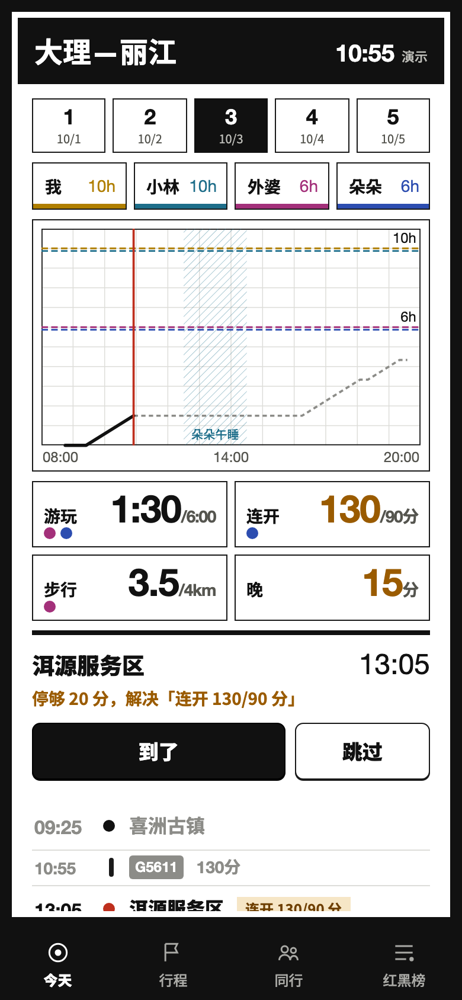
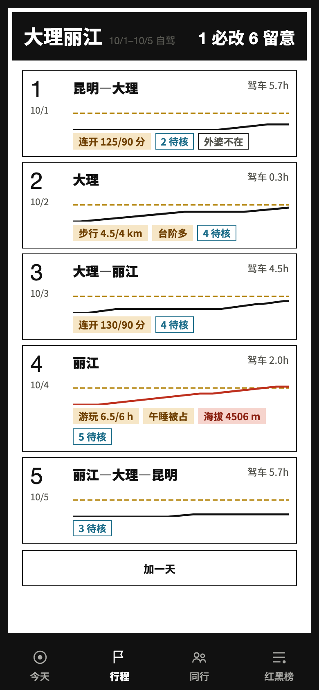
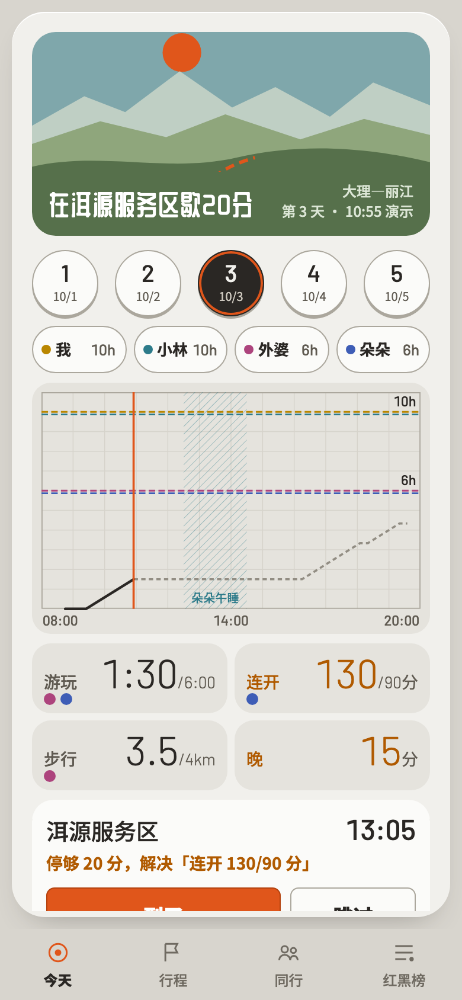
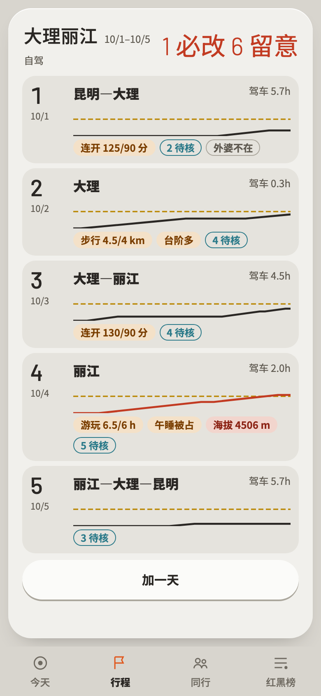
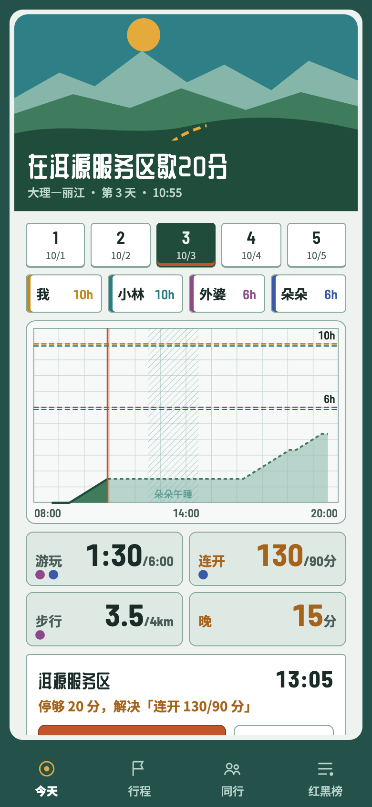
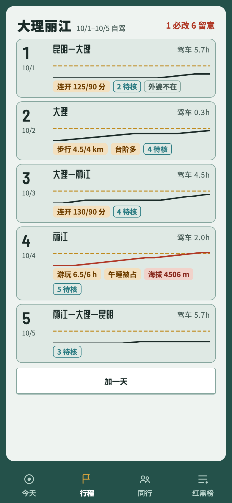
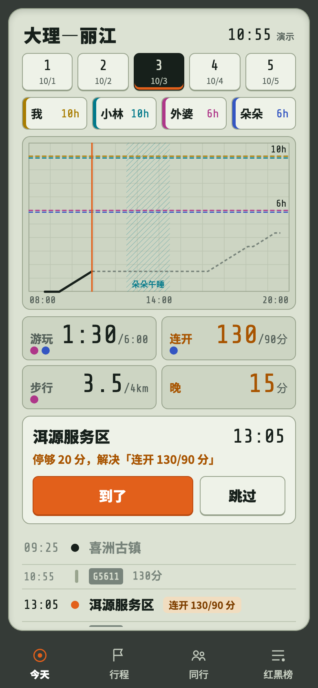
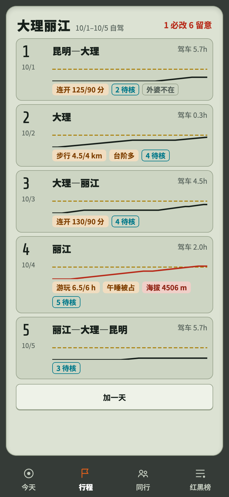
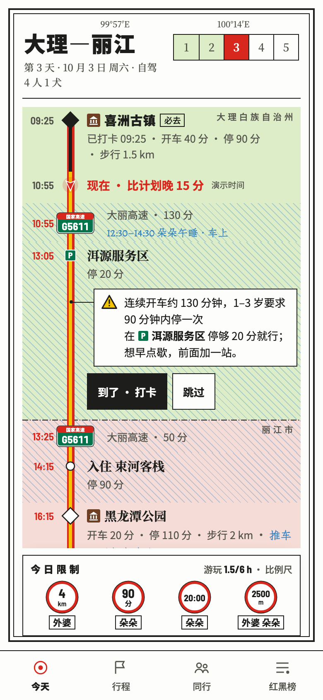
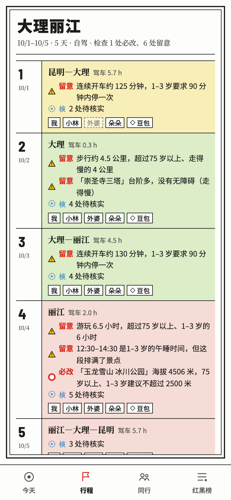

同一份功能（MVP）、同一份示例数据，只换视觉。前四套共用「曲线 + 读数 + 下一站」的页面结构，第五套是最早的地图册。点「打开这一套」会用单文件版直接进入那套风格，可以上手点；应用里「同行」页底部也能随时切换。
国家公园导览折页的做法：每页顶部一条黑带写地名，下面是方方正正的网格，颜色只留给同行者和问题。最冷静、最像印刷品。


浅暖灰机身、圆形日期键、胶囊同行者键，全机只有「到了」一颗橙色键；顶部开一扇海报窗口，平涂山景配一句话「此刻最该做的事」，太阳就是那颗橙。


旅行海报：顶部是一层层叠起来的山，太阳随时间走；下面一行大字只说此刻最该做的事（现在是「在洱源服务区歇 20 分」）。曲线下方填成山，上限像雪线。最有旅行的情绪，信息密度最低。





